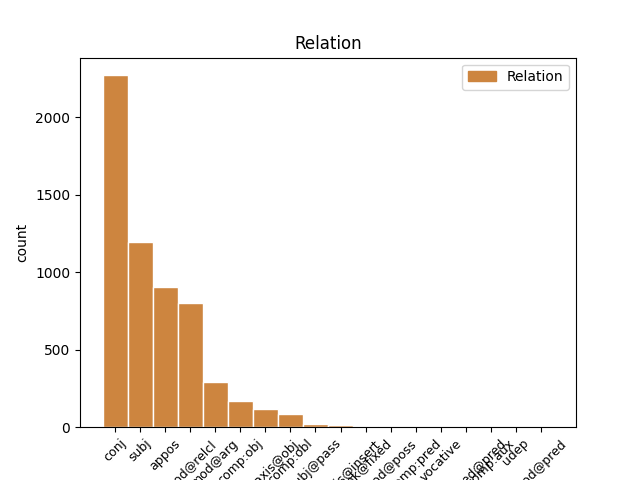
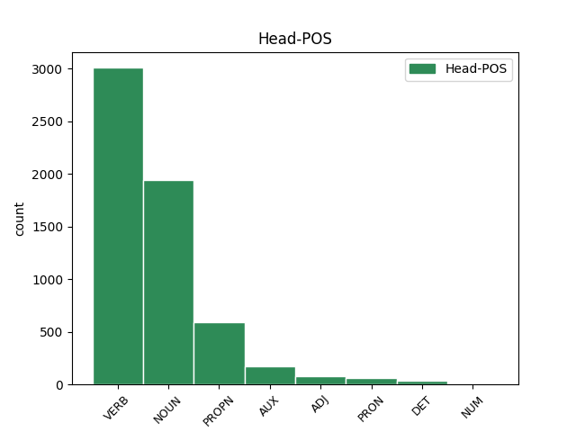
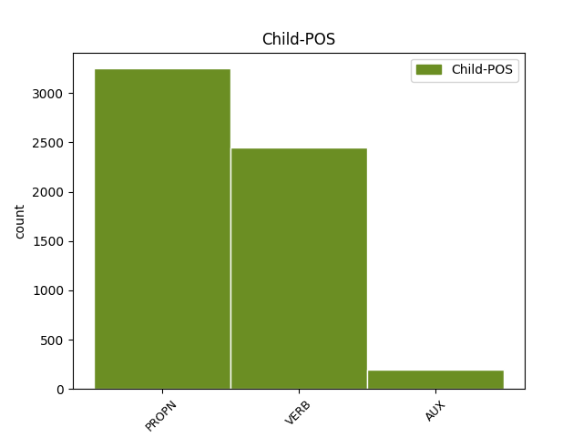

Distribution of features within this leaf



Agreement Rules sorted by frequency.
- When the dependent token is the conjunct(conj) of the head token, and the dependent token is VERB.
1 Wpełzł wpełznąć VERB praet:sg:m1:perf Animacy=Hum|Aspect=Perf|Gender=Masc|Mood=Ind|Number=Sing|Tense=Past|VerbForm=Fin|Voice=Act 0 _ _ _
2 przez _ _ _ _ 0 _ _ _
3 tunel _ _ _ _ 0 _ _ _
4 do _ _ _ _ 0 _ _ _
5 plastykowego _ _ _ _ 0 _ _ _
6 kombinezonu _ _ _ _ 0 _ _ _
7 i _ _ _ _ 0 _ _ _
8 nachylił nachylić VERB praet:sg:m1:perf Animacy=Hum|Aspect=Perf|Gender=Masc|Mood=Ind|Number=Sing|Tense=Past|VerbForm=Fin|Voice=Act 1 conj _ _
9 się _ _ _ _ 0 _ _ _
10 nad _ _ _ _ 0 _ _ _
11 pacjentem _ _ _ _ 0 _ _ _
12 . _ _ _ _ 0 _ _ _
1 Frank Frank PROPN subst:sg:nom:m1 Animacy=Hum|Case=Nom|Gender=Masc|Number=Sing 2 subj _ _
2 wyszedł wyniść VERB praet:sg:m1:perf Animacy=Hum|Aspect=Perf|Gender=Masc|Mood=Ind|Number=Sing|Tense=Past|VerbForm=Fin|Voice=Act 0 _ _ _
3 z _ _ _ _ 0 _ _ _
4 namiotu _ _ _ _ 0 _ _ _
5 z _ _ _ _ 0 _ _ _
6 okiem _ _ _ _ 0 _ _ _
7 zalepionym _ _ _ _ 0 _ _ _
8 plastrem _ _ _ _ 0 _ _ _
9 , _ _ _ _ 0 _ _ _
10 przykładając _ _ _ _ 0 _ _ _
11 chusteczkę _ _ _ _ 0 _ _ _
12 do _ _ _ _ 0 _ _ _
13 skaleczonej _ _ _ _ 0 _ _ _
14 wargi _ _ _ _ 0 _ _ _
15 . _ _ _ _ 0 _ _ _
1 W _ _ _ _ 0 _ _ _
2 uzasadnieniu _ _ _ _ 0 _ _ _
3 swojego _ _ _ _ 0 _ _ _
4 wniosku _ _ _ _ 0 _ _ _
5 o _ _ _ _ 0 _ _ _
6 udzielenie _ _ _ _ 0 _ _ _
7 azylu _ _ _ _ 0 _ _ _
8 podał _ _ _ _ 0 _ _ _
9 , _ _ _ _ 0 _ _ _
10 że _ _ _ _ 0 _ _ _
11 na _ _ _ _ 0 _ _ _
12 skutek _ _ _ _ 0 _ _ _
13 rozpaczy _ _ _ _ 0 _ _ _
14 z _ _ _ _ 0 _ _ _
15 powodu _ _ _ _ 0 _ _ _
16 pozbawienia _ _ _ _ 0 _ _ _
17 wolności _ _ _ _ 0 _ _ _
18 swojego _ _ _ _ 0 _ _ _
19 brata _ _ _ _ 0 _ _ _
20 zasztyletował _ _ _ _ 0 _ _ _
21 członka _ _ _ _ 0 _ _ _
22 partii partia NOUN subst:sg:gen:f Case=Gen|Gender=Fem|Number=Sing 0 _ _ _
23 Baath Baath PROPN subst:sg:nom:f Case=Nom|Gender=Fem|Number=Sing 22 appos _ SpaceAfter=No
24 . _ _ _ _ 0 _ _ _
1 Rezultaty _ _ _ _ 0 _ _ _
2 UGW _ _ _ _ 0 _ _ _
3 powinny _ _ _ _ 0 _ _ _
4 być _ _ _ _ 0 _ _ _
5 oceniane _ _ _ _ 0 _ _ _
6 również _ _ _ _ 0 _ _ _
7 z _ _ _ _ 0 _ _ _
8 punktu _ _ _ _ 0 _ _ _
9 widzenia _ _ _ _ 0 _ _ _
10 polityki _ _ _ _ 0 _ _ _
11 wspólnych _ _ _ _ 0 _ _ _
12 stóp stopa NOUN subst:pl:gen:f Case=Gen|Gender=Fem|Number=Plur 0 _ _ _
13 procentowych _ _ _ _ 0 _ _ _
14 , _ _ _ _ 0 _ _ _
15 które _ _ _ _ 0 _ _ _
16 w _ _ _ _ 0 _ _ _
17 wielu _ _ _ _ 0 _ _ _
18 krajach _ _ _ _ 0 _ _ _
19 skutkowały skutkować VERB praet:pl:f:imperf Aspect=Imp|Gender=Fem|Mood=Ind|Number=Plur|Tense=Past|VerbForm=Fin|Voice=Act 12 mod@relcl _ _
20 wzrostem _ _ _ _ 0 _ _ _
21 cen _ _ _ _ 0 _ _ _
22 na _ _ _ _ 0 _ _ _
23 rynku _ _ _ _ 0 _ _ _
24 nieruchomości _ _ _ _ 0 _ _ _
1 Podpodział _ _ _ _ 0 _ _ _
2 systemu _ _ _ _ 0 _ _ _
3 VAT _ _ _ _ 0 _ _ _
4 ( _ _ _ _ 0 _ _ _
5 tylko _ _ _ _ 0 _ _ _
6 Hiszpania Hiszpania PROPN subst:sg:nom:f Case=Nom|Gender=Fem|Number=Sing 0 _ _ _
7 , _ _ _ _ 0 _ _ _
8 Francja Francja PROPN subst:sg:nom:f Case=Nom|Gender=Fem|Number=Sing 6 conj _ _
9 i _ _ _ _ 0 _ _ _
10 Włochy _ _ _ _ 0 _ _ _
11 ) _ _ _ _ 0 _ _ _
1 Podpodział _ _ _ _ 0 _ _ _
2 systemu system NOUN subst:sg:gen:m3 Animacy=Inan|Case=Gen|Gender=Masc|Number=Sing 0 _ _ _
3 VAT VAT PROPN subst:sg:nom:m3 Animacy=Inan|Case=Nom|Gender=Masc|Number=Sing 2 mod@arg _ _
4 ( _ _ _ _ 0 _ _ _
5 tylko _ _ _ _ 0 _ _ _
6 Hiszpania _ _ _ _ 0 _ _ _
7 , _ _ _ _ 0 _ _ _
8 Francja _ _ _ _ 0 _ _ _
9 i _ _ _ _ 0 _ _ _
10 Włochy _ _ _ _ 0 _ _ _
11 ) _ _ _ _ 0 _ _ _
1 Sąd _ _ _ _ 0 _ _ _
2 potwierdza _ _ _ _ 0 _ _ _
3 zakaz _ _ _ _ 0 _ _ _
4 przejęcia przejąć NOUN ger:sg:gen:n:perf:aff Aspect=Perf|Case=Gen|Gender=Neut|Number=Sing|Polarity=Pos|VerbForm=Vnoun 0 _ _ _
5 Gas Gas PROPN subst:sg:gen:n:ncol Case=Gen|Gender=Neut|Number=Sing 4 comp:obj _ _
6 de _ _ _ _ 0 _ _ _
7 Portugal _ _ _ _ 0 _ _ _
8 przez _ _ _ _ 0 _ _ _
9 Energias _ _ _ _ 0 _ _ _
10 de _ _ _ _ 0 _ _ _
11 Portugal _ _ _ _ 0 _ _ _
12 oraz _ _ _ _ 0 _ _ _
13 Eni _ _ _ _ 0 _ _ _
1 W _ _ _ _ 0 _ _ _
2 istocie _ _ _ _ 0 _ _ _
3 , _ _ _ _ 0 _ _ _
4 osiągnięcie _ _ _ _ 0 _ _ _
5 któregokolwiek _ _ _ _ 0 _ _ _
6 z _ _ _ _ 0 _ _ _
7 pięciu _ _ _ _ 0 _ _ _
8 głównych _ _ _ _ 0 _ _ _
9 celów _ _ _ _ 0 _ _ _
10 analizowanych _ _ _ _ 0 _ _ _
11 w _ _ _ _ 0 _ _ _
12 raporcie _ _ _ _ 0 _ _ _
13 będzie _ _ _ _ 0 _ _ _
14 wymagało _ _ _ _ 0 _ _ _
15 znaczących _ _ _ _ 0 _ _ _
16 starań staranie NOUN subst:pl:gen:n:ncol Case=Gen|Gender=Neut|Number=Plur 0 _ _ _
17 politycznych _ _ _ _ 0 _ _ _
18 w _ _ _ _ 0 _ _ _
19 większości _ _ _ _ 0 _ _ _
20 krajów _ _ _ _ 0 _ _ _
21 , _ _ _ _ 0 _ _ _
22 których _ _ _ _ 0 _ _ _
23 łącznych _ _ _ _ 0 _ _ _
24 kosztów _ _ _ _ 0 _ _ _
25 nie _ _ _ _ 0 _ _ _
26 można _ _ _ _ 0 _ _ _
27 było być AUX praet:sg:n:imperf Aspect=Imp|Gender=Neut|Mood=Ind|Number=Sing|Tense=Past|VerbForm=Fin|Voice=Act 16 mod@relcl _ _
28 w _ _ _ _ 0 _ _ _
29 całości _ _ _ _ 0 _ _ _
30 ująć _ _ _ _ 0 _ _ _
31 w _ _ _ _ 0 _ _ _
32 prezentowanych _ _ _ _ 0 _ _ _
33 danych _ _ _ _ 0 _ _ _
34 - _ _ _ _ 0 _ _ _
35 przyznają _ _ _ _ 0 _ _ _
36 autorzy _ _ _ _ 0 _ _ _
37 . _ _ _ _ 0 _ _ _
1 Obecnie _ _ _ _ 0 _ _ _
2 ponad _ _ _ _ 0 _ _ _
3 50 _ _ _ _ 0 _ _ _
4 % _ _ _ _ 0 _ _ _
5 leków _ _ _ _ 0 _ _ _
6 stosowanych _ _ _ _ 0 _ _ _
7 w _ _ _ _ 0 _ _ _
8 Europie _ _ _ _ 0 _ _ _
9 w _ _ _ _ 0 _ _ _
10 leczeniu _ _ _ _ 0 _ _ _
11 dzieci _ _ _ _ 0 _ _ _
12 nie _ _ _ _ 0 _ _ _
13 przeszło przejść VERB praet:sg:n:perf Aspect=Perf|Gender=Neut|Mood=Ind|Number=Sing|Tense=Past|VerbForm=Fin|Voice=Act 0 _ _ _
14 badań _ _ _ _ 0 _ _ _
15 klinicznych _ _ _ _ 0 _ _ _
16 w _ _ _ _ 0 _ _ _
17 tym _ _ _ _ 0 _ _ _
18 zakresie _ _ _ _ 0 _ _ _
19 ani _ _ _ _ 0 _ _ _
20 nie _ _ _ _ 0 _ _ _
21 zostało zostać AUX praet:sg:n:perf Aspect=Perf|Gender=Neut|Mood=Ind|Number=Sing|Tense=Past|VerbForm=Fin|Voice=Act 13 conj _ _
22 dopuszczonych _ _ _ _ 0 _ _ _
23 do _ _ _ _ 0 _ _ _
24 obrotu _ _ _ _ 0 _ _ _
25 z _ _ _ _ 0 _ _ _
26 takim _ _ _ _ 0 _ _ _
27 przeznaczeniem _ _ _ _ 0 _ _ _
28 . _ _ _ _ 0 _ _ _
1 W _ _ _ _ 0 _ _ _
2 poprzednich _ _ _ _ 0 _ _ _
3 latach _ _ _ _ 0 _ _ _
4 skupowali skupować VERB praet:pl:m1:imperf Animacy=Hum|Aspect=Imp|Gender=Masc|Mood=Ind|Number=Plur|Tense=Past|VerbForm=Fin|Voice=Act 20 parataxis@obj _ _
5 oni _ _ _ _ 0 _ _ _
6 zboże _ _ _ _ 0 _ _ _
7 od _ _ _ _ 0 _ _ _
8 gospodarzy _ _ _ _ 0 _ _ _
9 , _ _ _ _ 0 _ _ _
10 a _ _ _ _ 0 _ _ _
11 następnie _ _ _ _ 0 _ _ _
12 sprzedawali _ _ _ _ 0 _ _ _
13 je _ _ _ _ 0 _ _ _
14 i _ _ _ _ 0 _ _ _
15 brali _ _ _ _ 0 _ _ _
16 dopłaty _ _ _ _ 0 _ _ _
17 dla _ _ _ _ 0 _ _ _
18 siebie _ _ _ _ 0 _ _ _
19 - _ _ _ _ 0 _ _ _
20 dodał dodać VERB praet:sg:m1:perf Animacy=Hum|Aspect=Perf|Gender=Masc|Mood=Ind|Number=Sing|Tense=Past|VerbForm=Fin|Voice=Act 0 _ _ _
21 . _ _ _ _ 0 _ _ _
1 Preparat _ _ _ _ 0 _ _ _
2 Telzir _ _ _ _ 0 _ _ _
3 nie _ _ _ _ 0 _ _ _
4 powoduje _ _ _ _ 0 _ _ _
5 wyleczenia _ _ _ _ 0 _ _ _
6 zakażenia zakazić NOUN ger:sg:gen:n:perf:aff Aspect=Perf|Case=Gen|Gender=Neut|Number=Sing|Polarity=Pos|VerbForm=Vnoun 0 _ _ _
7 HIV HIV PROPN subst:sg:inst:n:ncol Case=Ins|Gender=Neut|Number=Sing 6 comp:obl _ _
8 ani _ _ _ _ 0 _ _ _
9 AIDS _ _ _ _ 0 _ _ _
10 , _ _ _ _ 0 _ _ _
11 ale _ _ _ _ 0 _ _ _
12 może _ _ _ _ 0 _ _ _
13 przyczynić _ _ _ _ 0 _ _ _
14 się _ _ _ _ 0 _ _ _
15 do _ _ _ _ 0 _ _ _
16 opóźnienia _ _ _ _ 0 _ _ _
17 uszkodzenia _ _ _ _ 0 _ _ _
18 układu _ _ _ _ 0 _ _ _
19 odpornościowego _ _ _ _ 0 _ _ _
20 oraz _ _ _ _ 0 _ _ _
21 wystąpienia _ _ _ _ 0 _ _ _
22 zakażeń _ _ _ _ 0 _ _ _
23 i _ _ _ _ 0 _ _ _
24 chorób _ _ _ _ 0 _ _ _
25 związanych _ _ _ _ 0 _ _ _
26 z _ _ _ _ 0 _ _ _
27 AIDS _ _ _ _ 0 _ _ _
28 . _ _ _ _ 0 _ _ _
1 Kress Kress PROPN subst:sg:nom:m1 Animacy=Hum|Case=Nom|Gender=Masc|Number=Sing 2 subj@pass _ _
2 był być AUX praet:sg:m1:imperf Animacy=Hum|Aspect=Imp|Gender=Masc|Mood=Ind|Number=Sing|Tense=Past|VerbForm=Fin|Voice=Act 0 _ _ _
3 nieco _ _ _ _ 0 _ _ _
4 rozczarowany _ _ _ _ 0 _ _ _
5 ale _ _ _ _ 0 _ _ _
6 zdecydował _ _ _ _ 0 _ _ _
7 , _ _ _ _ 0 _ _ _
8 że _ _ _ _ 0 _ _ _
9 da _ _ _ _ 0 _ _ _
10 im _ _ _ _ 0 _ _ _
11 trochę _ _ _ _ 0 _ _ _
12 czasu _ _ _ _ 0 _ _ _
13 . _ _ _ _ 0 _ _ _
1 Kate _ _ _ _ 0 _ _ _
2 westchnęła _ _ _ _ 0 _ _ _
3 ciężko _ _ _ _ 0 _ _ _
4 : _ _ _ _ 0 _ _ _
5 nie _ _ _ _ 0 _ _ _
6 zapytał zapytać VERB praet:sg:m1:perf Animacy=Hum|Aspect=Perf|Gender=Masc|Mood=Ind|Number=Sing|Tense=Past|VerbForm=Fin|Voice=Act 0 _ _ _
7 nawet _ _ _ _ 0 _ _ _
8 , _ _ _ _ 0 _ _ _
9 czy _ _ _ _ 0 _ _ _
10 urodził urodzić VERB praet:sg:m1:perf Animacy=Hum|Aspect=Perf|Gender=Masc|Mood=Ind|Number=Sing|Tense=Past|VerbForm=Fin|Voice=Act 6 comp:obj _ _
11 się _ _ _ _ 0 _ _ _
12 chłopiec _ _ _ _ 0 _ _ _
13 czy _ _ _ _ 0 _ _ _
14 dziewczynka _ _ _ _ 0 _ _ _
15 . _ _ _ _ 0 _ _ _
1 W _ _ _ _ 0 _ _ _
2 górnej _ _ _ _ 0 _ _ _
3 prawej _ _ _ _ 0 _ _ _
4 części _ _ _ _ 0 _ _ _
5 okna _ _ _ _ 0 _ _ _
6 głównego _ _ _ _ 0 _ _ _
7 można _ _ _ _ 0 _ _ _
8 znaleźć _ _ _ _ 0 _ _ _
9 dwie _ _ _ _ 0 _ _ _
10 przydatne _ _ _ _ 0 _ _ _
11 podczas _ _ _ _ 0 _ _ _
12 testów _ _ _ _ 0 _ _ _
13 funkcje _ _ _ _ 0 _ _ _
14 : _ _ _ _ 0 _ _ _
15 Anti _ _ _ _ 0 _ _ _
16 flood _ _ _ _ 0 _ _ _
17 i _ _ _ _ 0 _ _ _
18 Ping Ping PROPN subst:sg:acc:m3 Animacy=Inan|Case=Acc|Gender=Masc|Number=Sing 0 _ _ _
19 Check Check PROPN subst:sg:acc:m3 Animacy=Inan|Case=Acc|Gender=Masc|Number=Sing 18 unk@fixed _ SpaceAfter=No
20 . _ _ _ _ 0 _ _ _
1 Wszyscy _ _ _ _ 0 _ _ _
2 chłopacy _ _ _ _ 0 _ _ _
3 się _ _ _ _ 0 _ _ _
4 na _ _ _ _ 0 _ _ _
5 nią _ _ _ _ 0 _ _ _
6 brandzlowali _ _ _ _ 0 _ _ _
7 , _ _ _ _ 0 _ _ _
8 wszystkich _ _ _ _ 0 _ _ _
9 , _ _ _ _ 0 _ _ _
10 że _ _ _ _ 0 _ _ _
11 jest _ _ _ _ 0 _ _ _
12 za _ _ _ _ 0 _ _ _
13 szybą _ _ _ _ 0 _ _ _
14 , _ _ _ _ 0 _ _ _
15 nieustannie _ _ _ _ 0 _ _ _
16 wkurwiała _ _ _ _ 0 _ _ _
17 , _ _ _ _ 0 _ _ _
18 aż _ _ _ _ 0 _ _ _
19 Łysy _ _ _ _ 0 _ _ _
20 jej _ _ _ _ 0 _ _ _
21 dorysował _ _ _ _ 0 _ _ _
22 markerem _ _ _ _ 0 _ _ _
23 kły _ _ _ _ 0 _ _ _
24 i _ _ _ _ 0 _ _ _
25 kutasa _ _ _ _ 0 _ _ _
26 , _ _ _ _ 0 _ _ _
27 gwiazdę _ _ _ _ 0 _ _ _
28 Dawida _ _ _ _ 0 _ _ _
29 na _ _ _ _ 0 _ _ _
30 czole _ _ _ _ 0 _ _ _
31 i _ _ _ _ 0 _ _ _
32 podpisał podpisać VERB praet:sg:m1:perf Animacy=Hum|Aspect=Perf|Gender=Masc|Mood=Ind|Number=Sing|Tense=Past|VerbForm=Fin|Voice=Act 0 _ _ _
33 " _ _ _ _ 0 _ _ _
34 Jude Jude PROPN subst:sg:nom:m1 Animacy=Hum|Case=Nom|Gender=Masc|Number=Sing 32 parataxis@obj _ SpaceAfter=No
35 " _ _ _ _ 0 _ _ _
36 i _ _ _ _ 0 _ _ _
37 " _ _ _ _ 0 _ _ _
38 cwel _ _ _ _ 0 _ _ _
39 " _ _ _ _ 0 _ _ _
40 . _ _ _ _ 0 _ _ _
1 Został zostać VERB praet:sg:m1:perf Animacy=Hum|Aspect=Perf|Gender=Masc|Mood=Ind|Number=Sing|Tense=Past|VerbForm=Fin|Voice=Act 0 _ _ _
2 em _ _ _ _ 0 _ _ _
3 Żydem Żyd PROPN subst:sg:inst:m1 Animacy=Hum|Case=Ins|Gender=Masc|Number=Sing 1 comp:pred@pred _ _
4 zaraz _ _ _ _ 0 _ _ _
5 po _ _ _ _ 0 _ _ _
6 oderwaniu _ _ _ _ 0 _ _ _
7 się _ _ _ _ 0 _ _ _
8 od _ _ _ _ 0 _ _ _
9 polskiej _ _ _ _ 0 _ _ _
10 ziemi _ _ _ _ 0 _ _ _
11 , _ _ _ _ 0 _ _ _
12 tej _ _ _ _ 0 _ _ _
13 , _ _ _ _ 0 _ _ _
14 której _ _ _ _ 0 _ _ _
15 nigdy _ _ _ _ 0 _ _ _
16 nie _ _ _ _ 0 _ _ _
17 sprzedamy _ _ _ _ 0 _ _ _
18 cudzoziemcom _ _ _ _ 0 _ _ _
19 . _ _ _ _ 0 _ _ _
1 - _ _ _ _ 0 _ _ _
2 Ale _ _ _ _ 0 _ _ _
3 przecież _ _ _ _ 0 _ _ _
4 poprzednio _ _ _ _ 0 _ _ _
5 - _ _ _ _ 0 _ _ _
6 sędzia _ _ _ _ 0 _ _ _
7 wydobył wydobyć VERB praet:sg:m1:perf Animacy=Hum|Aspect=Perf|Gender=Masc|Mood=Ind|Number=Sing|Tense=Past|VerbForm=Fin|Voice=Act 0 _ _ _
8 przeciągły _ _ _ _ 0 _ _ _
9 ton _ _ _ _ 0 _ _ _
10 z _ _ _ _ 0 _ _ _
11 trąbki _ _ _ _ 0 _ _ _
12 , _ _ _ _ 0 _ _ _
13 przyglądał _ _ _ _ 0 _ _ _
14 jej _ _ _ _ 0 _ _ _
15 się _ _ _ _ 0 _ _ _
16 ze _ _ _ _ 0 _ _ _
17 zdziwieniem _ _ _ _ 0 _ _ _
18 - _ _ _ _ 0 _ _ _
19 poprzednio _ _ _ _ 0 _ _ _
20 był być AUX praet:sg:m1:imperf Animacy=Hum|Aspect=Imp|Gender=Masc|Mood=Ind|Number=Sing|Tense=Past|VerbForm=Fin|Voice=Act 7 parataxis@obj _ _
21 pan _ _ _ _ 0 _ _ _
22 przeciwny _ _ _ _ 0 _ _ _
23 . _ _ _ _ 0 _ _ _
1 Efakt efekt NOUN subst:sg:nom:m3 Animacy=Inan|Case=Nom|Gender=Masc|Number=Sing 0 _ _ _
2 częstości _ _ _ _ 0 _ _ _
3 kontaktów _ _ _ _ 0 _ _ _
4 ( _ _ _ _ 0 _ _ _
5 Aronson Aronson PROPN subst:sg:nom:m1 Animacy=Hum|Case=Nom|Gender=Masc|Number=Sing 1 parataxis@insert _ _
6 - _ _ _ _ 0 _ _ _
7 " _ _ _ _ 0 _ _ _
8 Psychologia _ _ _ _ 0 _ _ _
9 Społeczna _ _ _ _ 0 _ _ _
10 " _ _ _ _ 0 _ _ _
11 ) _ _ _ _ 0 _ _ _
12 : _ _ _ _ 0 _ _ _
13 im _ _ _ _ 0 _ _ _
14 częściej _ _ _ _ 0 _ _ _
15 widzimy _ _ _ _ 0 _ _ _
16 i _ _ _ _ 0 _ _ _
17 kontaktujemy _ _ _ _ 0 _ _ _
18 się _ _ _ _ 0 _ _ _
19 z _ _ _ _ 0 _ _ _
20 drugą _ _ _ _ 0 _ _ _
21 osobą _ _ _ _ 0 _ _ _
22 , _ _ _ _ 0 _ _ _
23 tym _ _ _ _ 0 _ _ _
24 większe _ _ _ _ 0 _ _ _
25 prawdopodobieństwo _ _ _ _ 0 _ _ _
26 , _ _ _ _ 0 _ _ _
27 że _ _ _ _ 0 _ _ _
28 zostanie _ _ _ _ 0 _ _ _
29 on _ _ _ _ 0 _ _ _
30 naszym _ _ _ _ 0 _ _ _
31 przyjacielem _ _ _ _ 0 _ _ _
32 . _ _ _ _ 0 _ _ _
1 Krzysiek _ _ _ _ 0 _ _ _
2 wciąż _ _ _ _ 0 _ _ _
3 jeszcze _ _ _ _ 0 _ _ _
4 mówił _ _ _ _ 0 _ _ _
5 nieswoim _ _ _ _ 0 _ _ _
6 , _ _ _ _ 0 _ _ _
7 chrypliwym _ _ _ _ 0 _ _ _
8 głosem _ _ _ _ 0 _ _ _
9 , _ _ _ _ 0 _ _ _
10 ale _ _ _ _ 0 _ _ _
11 stopniowo _ _ _ _ 0 _ _ _
12 coraz _ _ _ _ 0 _ _ _
13 bardziej _ _ _ _ 0 _ _ _
14 się _ _ _ _ 0 _ _ _
15 rozkręcał rozkręcać VERB praet:sg:m1:imperf Animacy=Hum|Aspect=Imp|Gender=Masc|Mood=Ind|Number=Sing|Tense=Past|VerbForm=Fin|Voice=Act 0 _ _ _
16 i _ _ _ _ 0 _ _ _
17 , _ _ _ _ 0 _ _ _
18 przynajmniej _ _ _ _ 0 _ _ _
19 takie _ _ _ _ 0 _ _ _
20 wrażenie _ _ _ _ 0 _ _ _
21 odnosił odnosić VERB praet:sg:m1:imperf Animacy=Hum|Aspect=Imp|Gender=Masc|Mood=Ind|Number=Sing|Tense=Past|VerbForm=Fin|Voice=Act 15 parataxis@insert _ _
22 Tomek _ _ _ _ 0 _ _ _
23 , _ _ _ _ 0 _ _ _
24 budził _ _ _ _ 0 _ _ _
25 się _ _ _ _ 0 _ _ _
26 do _ _ _ _ 0 _ _ _
27 życia _ _ _ _ 0 _ _ _
28 . _ _ _ _ 0 _ _ _
1 Zanim _ _ _ _ 0 _ _ _
2 nawet _ _ _ _ 0 _ _ _
3 zdążył _ _ _ _ 0 _ _ _
4 je _ _ _ _ 0 _ _ _
5 odrzucić _ _ _ _ 0 _ _ _
6 na _ _ _ _ 0 _ _ _
7 bok _ _ _ _ 0 _ _ _
8 , _ _ _ _ 0 _ _ _
9 usłyszał _ _ _ _ 0 _ _ _
10 trzask _ _ _ _ 0 _ _ _
11 za _ _ _ _ 0 _ _ _
12 sobą _ _ _ _ 0 _ _ _
13 i _ _ _ _ 0 _ _ _
14 zrozumiał zrozumieć VERB praet:sg:m1:perf Animacy=Hum|Aspect=Perf|Gender=Masc|Mood=Ind|Number=Sing|Tense=Past|VerbForm=Fin|Voice=Act 0 _ _ _
15 jak _ _ _ _ 0 _ _ _
16 niemądry _ _ _ _ 0 _ _ _
17 był być AUX praet:sg:m3:imperf Animacy=Inan|Aspect=Imp|Gender=Masc|Mood=Ind|Number=Sing|Tense=Past|VerbForm=Fin|Voice=Act 14 comp:obj _ _
18 ten _ _ _ _ 0 _ _ _
19 ruch _ _ _ _ 0 _ _ _
20 . _ _ _ _ 0 _ _ _
1 On _ _ _ _ 0 _ _ _
2 powinien powinien VERB winien:sg:m1:imperf Animacy=Hum|Aspect=Imp|Gender=Masc|Mood=Ind|Number=Sing|Tense=Pres|VerbForm=Fin|VerbType=Mod|Voice=Act 3 comp:aux _ _
3 był być AUX praet:sg:m1:imperf Animacy=Hum|Aspect=Imp|Gender=Masc|Mood=Ind|Number=Sing|Tense=Past|VerbForm=Fin|Voice=Act 0 _ _ _
4 umrzeć _ _ _ _ 0 _ _ _
5 wczoraj _ _ _ _ 0 _ _ _
6 , _ _ _ _ 0 _ _ _
7 utopiony _ _ _ _ 0 _ _ _
8 w _ _ _ _ 0 _ _ _
9 tym _ _ _ _ 0 _ _ _
10 kontenerze _ _ _ _ 0 _ _ _
11 . _ _ _ _ 0 _ _ _
1 - _ _ _ _ 0 _ _ _
2 W _ _ _ _ 0 _ _ _
3 każdym _ _ _ _ 0 _ _ _
4 razie _ _ _ _ 0 _ _ _
5 ta _ _ _ _ 0 _ _ _
6 eksplozja _ _ _ _ 0 _ _ _
7 pozycji _ _ _ _ 0 _ _ _
8 politycznej _ _ _ _ 0 _ _ _
9 Walendziaka Walendziak PROPN subst:sg:gen:m1 Animacy=Hum|Case=Gen|Gender=Masc|Number=Sing 0 _ _ _
10 - _ _ _ _ 0 _ _ _
11 był być AUX praet:sg:m1:imperf Animacy=Hum|Aspect=Imp|Gender=Masc|Mood=Ind|Number=Sing|Tense=Past|VerbForm=Fin|Voice=Act 9 parataxis@insert _ _
12 przecież _ _ _ _ 0 _ _ _
13 wymieniany _ _ _ _ 0 _ _ _
14 jako _ _ _ _ 0 _ _ _
15 jeden _ _ _ _ 0 _ _ _
16 z _ _ _ _ 0 _ _ _
17 kandydatów _ _ _ _ 0 _ _ _
18 do _ _ _ _ 0 _ _ _
19 urzędu _ _ _ _ 0 _ _ _
20 premiera _ _ _ _ 0 _ _ _
21 - _ _ _ _ 0 _ _ _
22 była _ _ _ _ 0 _ _ _
23 dla _ _ _ _ 0 _ _ _
24 mnie _ _ _ _ 0 _ _ _
25 miłym _ _ _ _ 0 _ _ _
26 zaskoczeniem _ _ _ _ 0 _ _ _
27 - _ _ _ _ 0 _ _ _
28 kurtuazyjnie _ _ _ _ 0 _ _ _
29 twierdzi _ _ _ _ 0 _ _ _
30 Markiewicz _ _ _ _ 0 _ _ _
31 . _ _ _ _ 0 _ _ _
1 - _ _ _ _ 0 _ _ _
2 Tak _ _ _ _ 0 _ _ _
3 ? _ _ _ _ 0 _ _ _
4 - _ _ _ _ 0 _ _ _
5 zdziwił _ _ _ _ 0 _ _ _
6 się _ _ _ _ 0 _ _ _
7 naczelnik _ _ _ _ 0 _ _ _
8 i _ _ _ _ 0 _ _ _
9 otworzył _ _ _ _ 0 _ _ _
10 notatnik _ _ _ _ 0 _ _ _
11 na _ _ _ _ 0 _ _ _
12 chybił chybić VERB praet:sg:m1:perf Animacy=Hum|Aspect=Perf|Gender=Masc|Mood=Ind|Number=Sing|Tense=Past|VerbForm=Fin|Voice=Act 0 _ _ _
13 trafił trafić VERB praet:sg:m1:perf Animacy=Hum|Aspect=Perf|Gender=Masc|Mood=Ind|Number=Sing|Tense=Past|VerbForm=Fin|Voice=Act 12 unk@fixed _ SpaceAfter=No
14 . _ _ _ _ 0 _ _ _
1 Irenka _ _ _ _ 0 _ _ _
2 była być AUX praet:sg:f:imperf Aspect=Imp|Gender=Fem|Mood=Ind|Number=Sing|Tense=Past|VerbForm=Fin|Voice=Act 0 _ _ _
3 Belgijką Belgijka PROPN subst:sg:inst:f Case=Ins|Gender=Fem|Number=Sing 2 comp:pred _ SpaceAfter=No
4 . _ _ _ _ 0 _ _ _
1 Prokurator _ _ _ _ 0 _ _ _
2 uważa _ _ _ _ 0 _ _ _
3 , _ _ _ _ 0 _ _ _
4 że _ _ _ _ 0 _ _ _
5 gdy _ _ _ _ 0 _ _ _
6 autobusy _ _ _ _ 0 _ _ _
7 były być AUX praet:pl:m3:imperf Animacy=Inan|Aspect=Imp|Gender=Masc|Mood=Ind|Number=Plur|Tense=Past|VerbForm=Fin|Voice=Act 20 udep _ _
8 w _ _ _ _ 0 _ _ _
9 remoncie _ _ _ _ 0 _ _ _
10 , _ _ _ _ 0 _ _ _
11 Kazimierz _ _ _ _ 0 _ _ _
12 S _ _ _ _ 0 _ _ _
13 . _ _ _ _ 0 _ _ _
14 - _ _ _ _ 0 _ _ _
15 nakłaniany _ _ _ _ 0 _ _ _
16 przez _ _ _ _ 0 _ _ _
17 szefa _ _ _ _ 0 _ _ _
18 Bohureksu _ _ _ _ 0 _ _ _
19 - _ _ _ _ 0 _ _ _
20 podpisywał podpisywać VERB praet:sg:m1:imperf Animacy=Hum|Aspect=Imp|Gender=Masc|Mood=Ind|Number=Sing|Tense=Past|VerbForm=Fin|Voice=Act 0 _ _ _
21 protokoły _ _ _ _ 0 _ _ _
22 ich _ _ _ _ 0 _ _ _
23 odbioru _ _ _ _ 0 _ _ _
24 . _ _ _ _ 0 _ _ _
1 Cechy _ _ _ _ 0 _ _ _
2 , _ _ _ _ 0 _ _ _
3 które _ _ _ _ 0 _ _ _
4 drażnią _ _ _ _ 0 _ _ _
5 cię _ _ _ _ 0 _ _ _
6 u _ _ _ _ 0 _ _ _
7 innych _ _ _ _ 0 _ _ _
8 , _ _ _ _ 0 _ _ _
9 sam _ _ _ _ 0 _ _ _
10 kiedyś _ _ _ _ 0 _ _ _
11 przejawiał _ _ _ _ 0 _ _ _
12 eś _ _ _ _ 0 _ _ _
13 ( _ _ _ _ 0 _ _ _
14 w _ _ _ _ 0 _ _ _
15 obecnym _ _ _ _ 0 _ _ _
16 lub _ _ _ _ 0 _ _ _
17 poprzednich _ _ _ _ 0 _ _ _
18 żywotach _ _ _ _ 0 _ _ _
19 ) _ _ _ _ 0 _ _ _
20 , _ _ _ _ 0 _ _ _
21 lecz _ _ _ _ 0 _ _ _
22 odkąd _ _ _ _ 0 _ _ _
23 zostały zostać AUX praet:pl:f:perf Aspect=Perf|Gender=Fem|Mood=Ind|Number=Plur|Tense=Past|VerbForm=Fin|Voice=Act 34 comp:pred _ _
24 przez _ _ _ _ 0 _ _ _
25 ciebie _ _ _ _ 0 _ _ _
26 potępione _ _ _ _ 0 _ _ _
27 , _ _ _ _ 0 _ _ _
28 zamiast _ _ _ _ 0 _ _ _
29 wyrażać _ _ _ _ 0 _ _ _
30 się _ _ _ _ 0 _ _ _
31 na _ _ _ _ 0 _ _ _
32 zewnątrz _ _ _ _ 0 _ _ _
33 , _ _ _ _ 0 _ _ _
34 stały stać VERB praet:pl:f:imperf Aspect=Imp|Gender=Fem|Mood=Ind|Number=Plur|Tense=Past|VerbForm=Fin|Voice=Act 0 _ _ _
35 się _ _ _ _ 0 _ _ _
36 mieszkańcami _ _ _ _ 0 _ _ _
37 najgłębszych _ _ _ _ 0 _ _ _
38 pokładów _ _ _ _ 0 _ _ _
39 twej _ _ _ _ 0 _ _ _
40 podświadomości _ _ _ _ 0 _ _ _
41 . _ _ _ _ 0 _ _ _
1 - _ _ _ _ 0 _ _ _
2 Inne _ _ _ _ 0 _ _ _
3 hity _ _ _ _ 0 _ _ _
4 kinowe _ _ _ _ 0 _ _ _
5 : _ _ _ _ 0 _ _ _
6 Śniadanie _ _ _ _ 0 _ _ _
7 u _ _ _ _ 0 _ _ _
8 Tiffany'ego _ _ _ _ 0 _ _ _
9 Blake'a _ _ _ _ 0 _ _ _
10 Edwardsa _ _ _ _ 0 _ _ _
11 , _ _ _ _ 0 _ _ _
12 Siedmiu _ _ _ _ 0 _ _ _
13 wspaniałych wspaniały ADJ adj:pl:gen:m1:pos Animacy=Hum|Case=Gen|Degree=Pos|Gender=Masc|Number=Plur 0 _ _ _
14 Johna John PROPN subst:sg:gen:m1 Animacy=Hum|Case=Gen|Gender=Masc|Number=Sing 13 mod@poss _ _
15 Sturgesa _ _ _ _ 0 _ _ _
16 . _ _ _ _ 0 _ _ _
1 - _ _ _ _ 0 _ _ _
2 Ktokolwiek _ _ _ _ 0 _ _ _
3 to _ _ _ _ 0 _ _ _
4 był być AUX praet:sg:m1:imperf Animacy=Hum|Aspect=Imp|Gender=Masc|Mood=Ind|Number=Sing|Tense=Past|VerbForm=Fin|Voice=Act 6 subj _ SpaceAfter=No
5 , _ _ _ _ 0 _ _ _
6 przestał przestać VERB praet:sg:m1:perf Animacy=Hum|Aspect=Perf|Gender=Masc|Mood=Ind|Number=Sing|Tense=Past|VerbForm=Fin|Voice=Act 0 _ _ _
7 mi _ _ _ _ 0 _ _ _
8 wyglądać _ _ _ _ 0 _ _ _
9 na _ _ _ _ 0 _ _ _
10 Monikę _ _ _ _ 0 _ _ _
11 , _ _ _ _ 0 _ _ _
12 a _ _ _ _ 0 _ _ _
13 tym _ _ _ _ 0 _ _ _
14 bardziej _ _ _ _ 0 _ _ _
15 na _ _ _ _ 0 _ _ _
16 kandydatkę _ _ _ _ 0 _ _ _
17 na _ _ _ _ 0 _ _ _
18 niańkę _ _ _ _ 0 _ _ _
19 . _ _ _ _ 0 _ _ _
1 Ten _ _ _ _ 0 _ _ _
2 skurwysyn _ _ _ _ 0 _ _ _
3 próbował próbować VERB praet:sg:m1:imperf Animacy=Hum|Aspect=Imp|Gender=Masc|Mood=Ind|Number=Sing|Tense=Past|VerbForm=Fin|Voice=Act 0 _ _ _
4 odgryźć _ _ _ _ 0 _ _ _
5 mojego _ _ _ _ 0 _ _ _
6 fiuta _ _ _ _ 0 _ _ _
7 , _ _ _ _ 0 _ _ _
8 Jonesy Jonesy PROPN subst:sg:nom:m1 Animacy=Hum|Case=Nom|Gender=Masc|Number=Sing 3 vocative _ SpaceAfter=No
9 . _ _ _ _ 0 _ _ _
Disagree Examples:
1 Słońce _ _ _ _ 0 _ _ _
2 prażyło prażyć VERB praet:sg:n:imperf Aspect=Imp|Gender=Neut|Mood=Ind|Number=Sing|Tense=Past|VerbForm=Fin|Voice=Act 0 _ _ _
3 niemiłosiernie _ _ _ _ 0 _ _ _
4 , _ _ _ _ 0 _ _ _
5 a _ _ _ _ 0 _ _ _
6 na _ _ _ _ 0 _ _ _
7 domiar _ _ _ _ 0 _ _ _
8 złego _ _ _ _ 0 _ _ _
9 wykończyły wykończyć VERB praet:pl:m3:perf Animacy=Inan|Aspect=Perf|Gender=Masc|Mood=Ind|Number=Plur|Tense=Past|VerbForm=Fin|Voice=Act 2 conj _ _
10 się _ _ _ _ 0 _ _ _
11 zapasy _ _ _ _ 0 _ _ _
12 żywności _ _ _ _ 0 _ _ _
13 i _ _ _ _ 0 _ _ _
14 wody _ _ _ _ 0 _ _ _
15 . _ _ _ _ 0 _ _ _
1 Prezydenci prezydent NOUN subst:pl:nom:m1 Animacy=Hum|Case=Nom|Gender=Masc|Number=Plur 0 _ _ _
2 Polski Polska PROPN subst:sg:gen:f Case=Gen|Gender=Fem|Number=Sing 1 mod@arg _ SpaceAfter=No
3 , _ _ _ _ 0 _ _ _
4 Ukrainy _ _ _ _ 0 _ _ _
5 i _ _ _ _ 0 _ _ _
6 Rumunii _ _ _ _ 0 _ _ _
7 spotkali _ _ _ _ 0 _ _ _
8 się _ _ _ _ 0 _ _ _
9 na _ _ _ _ 0 _ _ _
10 roboczych _ _ _ _ 0 _ _ _
11 rozmowach _ _ _ _ 0 _ _ _
12 w _ _ _ _ 0 _ _ _
13 Bukareszcie _ _ _ _ 0 _ _ _
14 . _ _ _ _ 0 _ _ _
1 - _ _ _ _ 0 _ _ _
2 Możliwość _ _ _ _ 0 _ _ _
3 odejścia odejść NOUN ger:sg:gen:n:perf:aff Aspect=Perf|Case=Gen|Gender=Neut|Number=Sing|Polarity=Pos|VerbForm=Vnoun 0 _ _ _
4 Leszka Leszek PROPN subst:sg:gen:m1 Animacy=Hum|Case=Gen|Gender=Masc|Number=Sing 3 subj _ _
5 Balcerowicza _ _ _ _ 0 _ _ _
6 bardzo _ _ _ _ 0 _ _ _
7 zaniepokoiła _ _ _ _ 0 _ _ _
8 inwestorów _ _ _ _ 0 _ _ _
9 . _ _ _ _ 0 _ _ _
1 - _ _ _ _ 0 _ _ _
2 Pisali _ _ _ _ 0 _ _ _
3 śmy _ _ _ _ 0 _ _ _
4 razem _ _ _ _ 0 _ _ _
5 komunikaty _ _ _ _ 0 _ _ _
6 z _ _ _ _ 0 _ _ _
7 posiedzeń posiedzenie NOUN subst:pl:gen:n:ncol Case=Gen|Gender=Neut|Number=Plur 0 _ _ _
8 TKK TKK PROPN subst:sg:gen:f Case=Gen|Gender=Fem|Number=Sing 7 mod@arg _ SpaceAfter=No
9 . _ _ _ _ 0 _ _ _
1 - _ _ _ _ 0 _ _ _
2 Naukowo _ _ _ _ 0 _ _ _
3 udokumentowano _ _ _ _ 0 _ _ _
4 przypadek przypadek NOUN subst:sg:acc:m3 Animacy=Inan|Case=Acc|Gender=Masc|Number=Sing 0 _ _ _
5 Francuzki Francuzka PROPN subst:sg:gen:f Case=Gen|Gender=Fem|Number=Sing 4 mod@arg _ SpaceAfter=No
6 , _ _ _ _ 0 _ _ _
7 która _ _ _ _ 0 _ _ _
8 zmarła _ _ _ _ 0 _ _ _
9 w _ _ _ _ 0 _ _ _
10 wieku _ _ _ _ 0 _ _ _
11 122 _ _ _ _ 0 _ _ _
12 lat _ _ _ _ 0 _ _ _
13 . _ _ _ _ 0 _ _ _